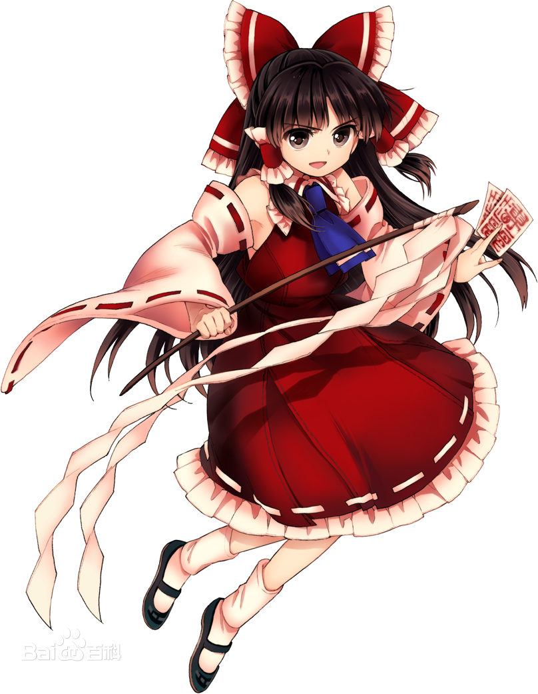

角色介绍
返回上一层
·博丽灵梦

博丽灵梦，系列作品《东方Project》中的主人公，幻想乡境内博丽神社的现有巫女，负责解决在幻想乡中发生的各种异变。
在《东方》系列的游戏中均以主角出场，在其他作品中也作为主要角色登场。作为博丽神社的巫女，退治妖怪是她的日常工作。
因为神社没什么参拜客，所以整天过着喝茶扫地的闲日子。
·雾雨魔理沙
雾雨魔理沙，系列作品《东方Project》中的主人公，居住在魔法森林的人类魔法使。
在《东方》系列的游戏中均以主角出场，在其他作品中也作为主要角色登场。
作为人类使用着魔法，像是和灵梦竞争一样进行着退治妖怪活动。居住在远离人类村里的魔法森林里，经营着名为“雾雨魔法店”的万事屋。